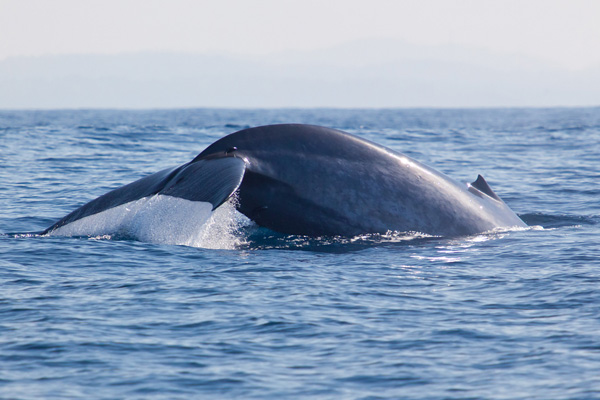
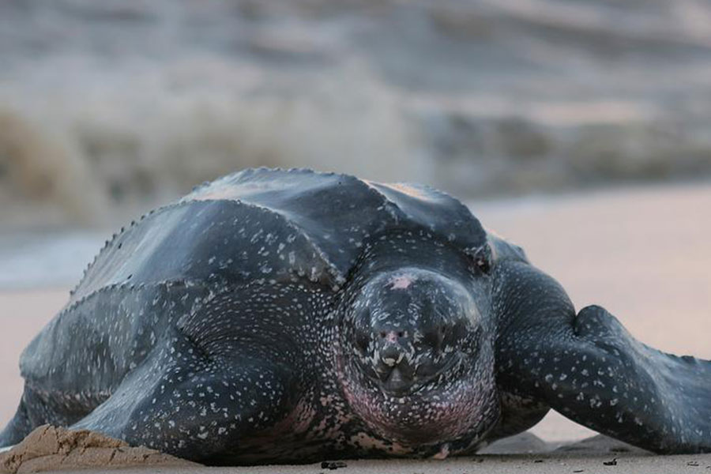

Wildlife Highlights
Animals you have must to see in the Pearl of the Indian Ocean

Lankan Leopard Panthera pardis kotiya – apex predators
Leopards are considered the most successful of the big cat species in the world. The Sri Lankan subspecies of leopards is testament to the adaptability of these spotted felines. Sri Lanka’s Yala National Park is prime leopard territory, as it is said to have the highest leopard density in the world.Leopards are the apex predator in Sri Lanka’s wild. Usually lone hunters, these cats can sometimes be seen sleeping during the day, hidden away from view on a tree branch. It is during sundown that they come down to hunt. With an indiscriminate diet, ranging from wild hares to deer, leopards survive the elements better than any other big cat in the world. Although most species of leopards are known to carry their prey up into trees, Sri Lankan leopards take advantage of their position on top of the food chain to eat their catch where they please.
Sri Lankan Safaris gives you the opportunity to view these magnificent felines in the wild in Sri Lanka’s many National Parks. Inquire today about our leopard safaris, and make your bookings today. Our guides are well equipped to find where you can see these big cats, and will take you there.

Sri Lankan Elephant Elephas maximus maximus – Majestic and gentle giants
Once extensively hunted for their ivory, the population of elephants in Sri Lanka dwindled to a few thousand, from a few hundreds of thousand before colonisation. Although the number of elephants with tusks has dropped dramatically as a result, the overall population of elephants has somewhat stabilised in the country due to conservation efforts in the country.
Elephants were very much a part of everyday life until very recently in Sri Lanka. They have been used in the logging industry and continue to be part of the cultural procession known as the Kandy Perahera.
To get the best elephant experience, though, you have to see them in their natural habitat. The Yala and Minneriya National Parks, as well as a few other national parks around the country, are prime locations to view these giants in the wild.
Sri Lanka Safaris offers great opportunities to view Sri Lankan elephants in their element. Our expert guides know where to find the herds of pachyderms, so that you get the best experience.

Blue whale Balaenoptera musculus- true giants of the ocean
Blue Whales are thought to be the largest animal ever to have lived on the planet. Like all species of whale, it is a marine mammal, and can reach up to 30m in length, and more than 170 tonnes. Commonly living alone or in pairs, they are part of great colonies which generally migrate long distances throughout the year.
Sri Lanka is the best country in the world to view blue whales, without exception. A blue whale population off the coast of Sri Lankan is believed to have up to 1,000 individuals, making it the largest blue whale colony anywhere in the world. It is also the only known pod of blue whales that is non-migratory, so visitors to the island have a chance to view these giants all year round.
Blue whales are not just the largest animal. They are said to be the loudest as well, although their calls fall outside the range of human hearing at 10 to 40Hz.
Sri Lanka Safaris offers a great opportunity for you to see these magnificent creatures up close. A short boat ride from any of several locations will get you close enough to see these giants in their natural habitat!

Leatherback Sea Turtle Dermochelys coriacea – graceful swimmers of the ocean
The leatherback turtle is the largest species of turtle alive today. What sets them apart from other turtles is the fact that they don’t have a shell, but a skin carapace. These beautiful sea reptilians can grow up to more than 2m in length, and weigh up to 250 - 500 kg.
Although they are great swimmers and divers, they are not very fast on land, where they have to visit every few years to lay their eggs. Humans living in coastal areas used this to their advantage and hunted these turtles for their meat and eggs. The dramatic reduction in numbers means that these turtles are now listed as critically endangered.
Although the habitat of the leatherback turtle is varied due to them travelling great distances, their numbers are cause for concern. Recent international conservation attempts have managed to stop the reduction in their numbers, but it is thought that it will take a long time for their numbers to get back to historical values.
Sri Lanka Safaris offers you an opportunity to see these magnificent reptiles in their natural habitat. Make an enquiry now and book soon for your chance to see these rare reptiles in their element.
_.jpg)